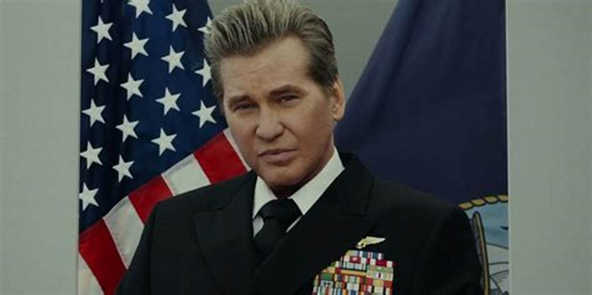

"Top Gun: Maverick" é a emocionante sequência do clássico filme de aviação. O Capitão Pete "Maverick" Mitchell, interpretado pelo icônico Tom Cruise, retorna como instrutor de voo na Top Gun, onde enfrenta fantasmas do passado e desafios tecnológicos modernos. Enquanto treina uma nova geração de pilotos de elite, incluindo o filho de seu falecido amigo Goose, Maverick deve confrontar suas próprias inseguranças e limites. O filme é uma mistura de ação intensa, drama pessoal e espetaculares cenas aéreas, prometendo uma aventura de tirar o fôlego que homenageia o legado da aviação militar.
Elenco
Tom Cruise como Capitão Pete "Maverick" MitchellMiles Teller como Tenente Bradley “Rooster” BradshawGlen Powell como Tenente Jake "Hangman" Seresin

Val Kilmer como Almirante Tom "Iceman" KazanskyJon Hamm como Tenente Beau "Cyclone" SimpsonJennifer Connelly como Penelope "Penny" BenjaminMonica Barbaro como Tenente Natasha "Phoenix" TraceLewis Pullman como Tenente Robert "Bob" Floyd
A seguir, você verá entrevistas com alguns atores de Top Gun: Maverick para conhecer melhor sobre os bastidores
"Rooster" - Miles Teller
"Payback" - Jay Ellis
"Hangman" - Glen Powell
"Phoenix" - Monica Barbaro
"Bob" - Lewis Pullman
"Fanboy" - Danny Ramirez
"Penny Benjamin" - Jennifer Connelly
Perguntas Frequentes
Quem são os atores principais em Top Gun: Maverick?Quem são os atores principais em Top Gun: Maverick?
Os atores principais do filme são Tom Cruise, Miles Teller e Jennifer Connelly.
Quem dirigiu Top Gun: Maverick?
O filme foi dirigido por Joseph Kosinski.
Qual é a data de lançamento de Top Gun: Maverick?
Top Gun: Maverick foi lançado em 2020.
Top Gun: Maverick é uma sequência de qual filme?
Top Gun: Maverick é a sequência do filme Top Gun de 1986.
Qual é a trama de Top Gun: Maverick?
Top Gun: Maverick segue a história de Pete "Maverick" Mitchell, um piloto de caça da Marinha dos EUA, enquanto ele enfrenta os desafios e mudanças no mundo da aviação.
O filme Top Gun: Maverick ganhou algum prêmio?
Até o momento, Top Gun: Maverick foi indicado para vários prêmios. Por favor, verifique as fontes mais recentes para informações atualizadas.